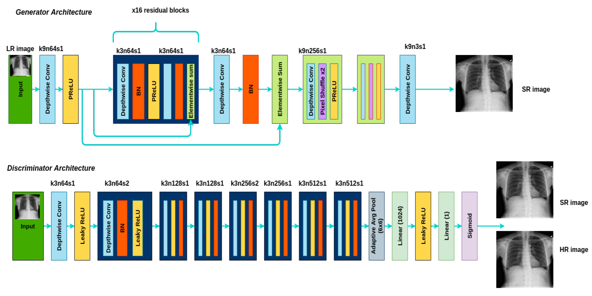
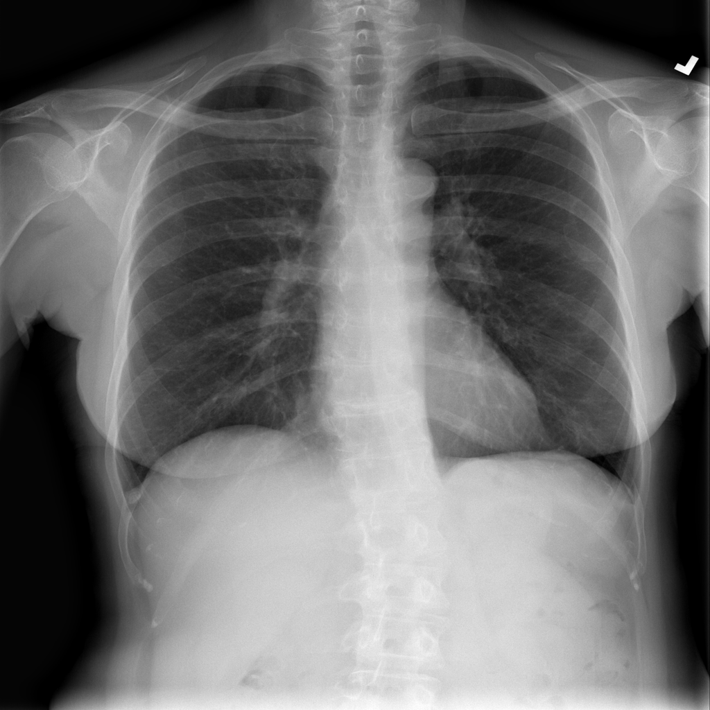

Medical X-Ray Super Resolution
GAN-Based Medical Image Enhancement | SRGAN / Swift-SRGAN Concepts | PyTorch
A medical image enhancement project that applies GAN-based super-resolution to improve the visual quality of low-resolution X-ray images. The system learns to reconstruct higher-resolution X-ray outputs from degraded low-resolution inputs, demonstrating how deep learning can support medical image restoration research and technical experimentation.
Project Overview
This project focuses on enhancing low-resolution medical X-ray images using a GAN-based super-resolution pipeline. The goal is to reconstruct sharper, higher-resolution X-ray outputs from degraded low-resolution inputs while aiming to preserve visible anatomical structures and visual clarity.
The project was developed as a research-oriented medical AI system, combining image preprocessing, paired low-resolution/high-resolution training data, generator-discriminator training, image quality evaluation, and visual comparison between low-resolution input, super-resolved output, and high-resolution reference images.
Dataset & Medical Imaging Context
The dataset used in this project came from a private clinical X-ray image source and was handled as a private medical imaging dataset for research and educational purposes. High-resolution X-ray images were downscaled to generate low-resolution inputs, allowing the model to learn the mapping from degraded images to enhanced super-resolution outputs.
This project focuses on medical X-ray image enhancement rather than natural image super-resolution. It is intended for research and technical demonstration only, does not provide medical diagnosis, and should not be used as a standalone clinical decision-making tool.
The Problem
Low-resolution X-ray images can lose fine structural detail, making visual analysis more difficult. Traditional interpolation-based upscaling methods can enlarge an image but often produce blurry outputs and fail to recover meaningful high-frequency details.
The challenge was to build a deep learning model capable of producing visually sharper X-ray images while aiming to preserve visible structure and reducing the quality loss caused by low-resolution input.
The Solution
I implemented a GAN-based super-resolution pipeline inspired by SRGAN / Swift-SRGAN concepts. The generator learns to reconstruct higher-resolution X-ray images from low-resolution inputs, while the discriminator helps encourage outputs that are visually closer to real high-resolution X-ray images.
The system includes preprocessing, paired dataset preparation, model training, inference, image quality evaluation, and visual comparison of low-resolution, super-resolved, and high-resolution images.
Model Architecture
The project uses a generator-discriminator super-resolution architecture. The generator reconstructs higher-resolution X-ray images from low-resolution inputs, while the discriminator learns to distinguish generated super-resolution images from real high-resolution references.
The generator uses residual learning and efficient convolutional blocks to recover structural details. The discriminator provides adversarial feedback, helping the generator produce sharper and more visually realistic outputs.

Low-Resolution vs Super-Resolution Results
Side-by-side comparison of the degraded low-resolution input and the enhanced super-resolution output generated by the trained model.

Workflow / Technical Process
- Collected and prepared a private medical X-ray image dataset
- Generated low-resolution inputs by downscaling high-resolution X-ray images
- Built paired LR/HR training samples for supervised super-resolution
- Implemented a GAN-based generator and discriminator architecture
- Trained the model to reconstruct higher-resolution outputs from low-resolution inputs
- Evaluated output quality using PSNR, SSIM, and visual comparison
- Built an inference pipeline for enhancing new low-resolution X-ray images
- Organized the repository for reproducible training and experimentation
Training & Evaluation
The model was trained and evaluated using standard image quality metrics commonly used in super-resolution tasks, including PSNR and SSIM. These metrics compare the generated super-resolution output against the high-resolution reference image.
Loss Function
The generator optimization combines multiple loss components to balance pixel-level reconstruction accuracy and perceptual image quality.
- Image Loss: pixel-level reconstruction error between generated and reference images
- Content Loss: feature-level similarity used to preserve structural information
- Adversarial Loss: discriminator-guided feedback for visually realistic output generation
- Total Variation Loss: smoothness regularization used to reduce unwanted artifacts
Total Loss = Image Loss + Perceptual Loss + TV Loss
Perceptual Loss = Adversarial Loss + Content LossTools & Technologies
- Python
- PyTorch
- GANs
- SRGAN / Swift-SRGAN Concepts
- OpenCV
- NumPy
- Medical Imaging
- PSNR / SSIM Evaluation
- Google Colab T4 GPU
Key Features
- GAN-based X-ray super-resolution pipeline
- Low-resolution to higher-resolution image reconstruction
- Generator-discriminator training workflow
- Medical image preprocessing and paired dataset preparation
- PSNR and SSIM evaluation
- Before/after visual comparison
- Research-oriented medical AI project structure
Results / Impact
The model produced enhanced X-ray outputs with improved visual sharpness compared to low-resolution inputs. The results demonstrate how GAN-based super-resolution can be applied to medical image enhancement research and how deep learning can help recover visual detail from degraded image data.
This project is not intended to replace clinical diagnosis. Instead, it demonstrates an applied medical AI workflow for image restoration, model training, evaluation, and visual comparison.
Repository Structure
Super_Resolution_Medical_X-Ray_Image/
├── assets/
├── data/
├── src/
│ ├── custom_loss.py
│ ├── make_dataset.py
│ ├── model_architecture.py
│ ├── model_metrics.py
│ ├── non_dl_super_resolution.py
│ ├── prepare_data.py
│ ├── split_dataset.py
│ └── train_model.py
├── .gitignore
├── README.md
└── requirements.txtSkills Demonstrated
- Medical image processing
- GAN-based super-resolution
- PyTorch model development
- Generator-discriminator training
- Image quality evaluation using PSNR and SSIM
- Dataset preprocessing and LR/HR pair generation
- Deep learning experimentation
- Research-oriented AI engineering
Engineering Highlights
- Built a GAN-based medical X-ray enhancement pipeline
- Prepared paired low-resolution and high-resolution X-ray training samples
- Implemented generator and discriminator training workflow
- Evaluated model output with PSNR and SSIM
- Created visual comparison between LR input and SR output
- Structured the repository for reproducible training and evaluation
- Applied deep learning to medical image restoration research